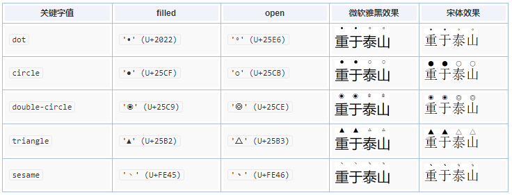

请选择下列不正确的一项
text-emphasis
text-emphasis-color 颜色
text-emphasis-style 形式，[ filled | open ] || [ dot | circle | double-circle | triangle | sesame ]或string
text-emphasis-position 位置，[ over | under ] && [ right | left ]
text-emphasis = text-emphasis-color + text-emphasis-style，是后两者的缩写，但不包含text-emphasis-position，它需要单独出来写。
